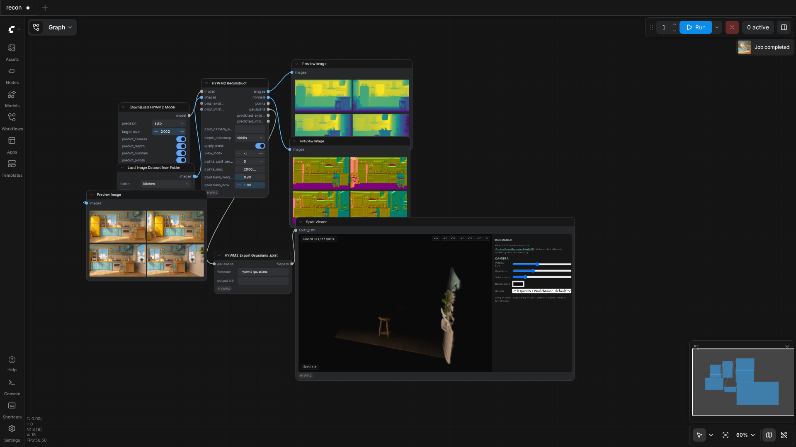

PozzettiAndrea/ComfyUI-HYWM2
Test Results
2026-05-10 04:08 UTC
Linux-6.8.0-107-generic-x86_64-with-glibc2.35
AMD Ryzen 5 3600 6-Core Processor
NVIDIA GeForce RTX 5060
100.0%
1 passed
1/1 tests
Workflows
Grid
List

recon
pass
100.09s
Downloaded Models
6 files · 3.0 GB
models/hywm2/
3.0 GB
model.safetensors
3.0 GB
config.json
842.0 B
.cache/huggingface/CACHEDIR.TAG
191.0 B
.cache/huggingface/download/model.safetensors.metadata
125.0 B
.cache/huggingface/download/config.json.metadata
101.0 B
.cache/huggingface/.gitignore
1.0 B
×
‹
›
0.0s / 0.0s
Resource Usage
RAM (GB)
VRAM (GB)